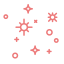

Java e Lógica de Programação
SQL e Banco de Dados Oracle
HTML, CSS e Desenvolvimento Web
UX/UI Design com Figma
Análise técnica com base em normas EMV e ISO

Atenta aos detalhes
Organizada
Pontual
Boa comunicação
- Experiência em Projetos Acadêmicos Desafiadores;
- Publicação Acadêmica na Revista InterAção.
Tenho interesse especial por áreas que unem tecnologia, usabilidade e organização, como desenvolvimento backend, banco de dados e UX/UI Design. Gosto de explorar como a lógica e a experiência do usuário podem caminhar juntas para criar soluções mais eficientes. Também me envolvo com projetos acadêmicos, escrita técnica e estou sempre em busca de novos aprendizados que me ajudem a crescer tanto na prática quanto na teoria.
Durante minha formação em Análise e Desenvolvimento de Sistemas na FAM, tive a oportunidade de aplicar meus conhecimentos em projetos práticos e acadêmicos. Desenvolvi o sistema Pet Guardian, voltado ao controle de informações de animais de estimação, utilizando banco de dados e interface funcional, o que me deu experiência com organização de dados e desenvolvimento orientado a objetivos reais. Também criei este site para exibir meus projetos e me familiarizar com HTML, CSS e versionamento no GitHub. Além disso, tive dois artigos acadêmicos aprovados para publicação, o que reforça minha dedicação à pesquisa, à escrita técnica e à qualidade no desenvolvimento.
Tive também uma experiência enriquecedora na empresa Argotechno, onde atuei com análise de cartões de crédito conforme normas EMV e ISO. Essa vivência me proporcionou contato direto com padrões técnicos e metodologias exigentes, além de reforçar minha atenção aos detalhes e a capacidade de interpretar e aplicar normas em ambientes reais. Essas experiências, somadas ao meu constante interesse por UX/UI Design e lógica de programação com Java, têm moldado minha trajetória profissional com base na curiosidade, aprendizado contínuo e compromisso com qualidade.